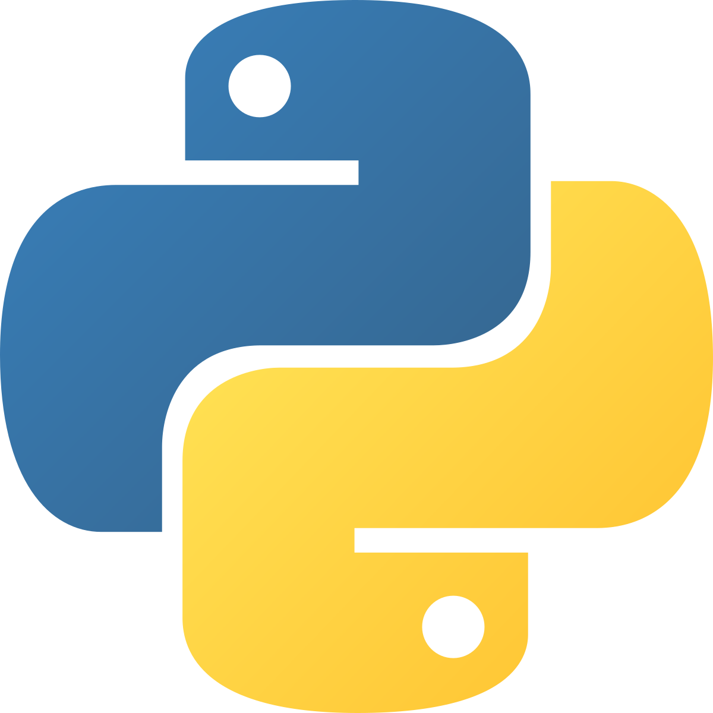
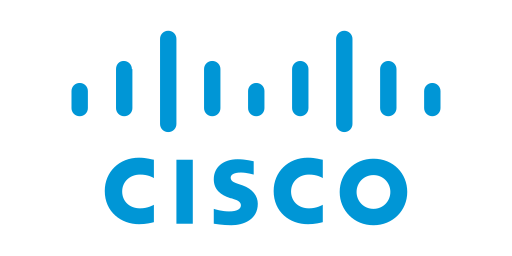
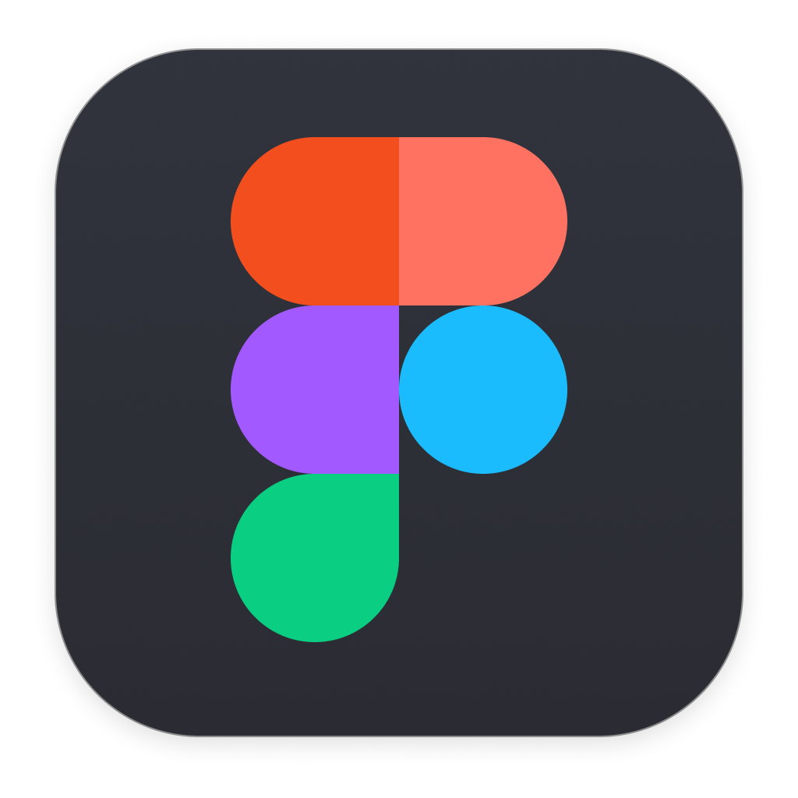

Technical Skills

Python
Data analysis, visualisation, and machine learning with Python (Pandas, NumPy, Matplotlib)
Java
Object-oriented programming and backend systems
React + React Native
Reusable components and modern frontend development
Web Development
Building responsive, dynamic applications with HTML, CSS, JavaScript, and PHP
SQL
Database design, queries, and data management

Networks & Cybersecurity
Knowledge of networking & cybersecurity fundamentals, secure system design, and threat protection.
Git & GitHub
Version control and collaborative development

Content & Design
Visual storytelling, blogs, and user-focused design